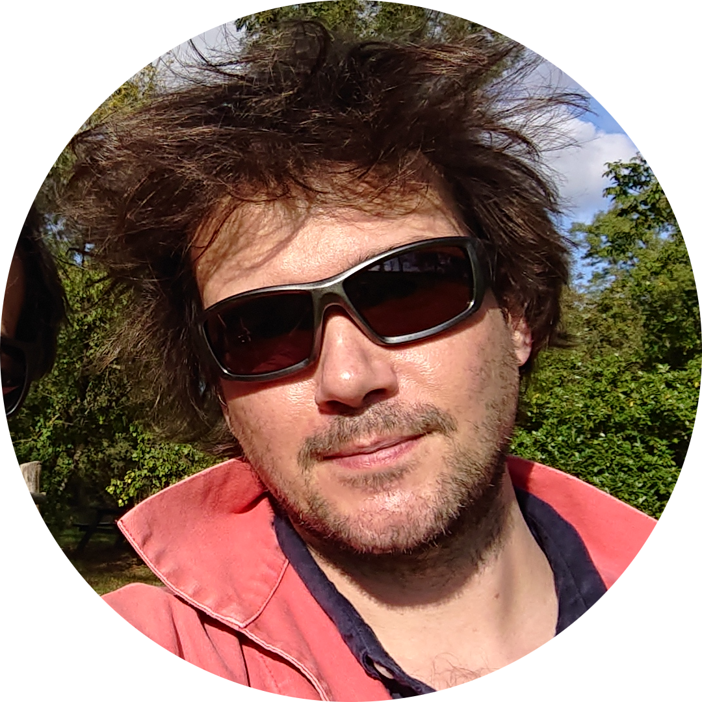

Collective dynamics in binary superfluids: From dissipationless flow to dispersive shock waves
2 × Paris (2026)
Peyresq (2026)
Cargèse (2025)
Rochefort (2025)
Quantum Many-Body Physics with Nonlinear Propagating Light
Grenoble (2019)
Lyon (2018)
Cergy-Pontoise (2018)
Orsay (2018)
Nice (2017)
Orsay (2017)
Trento (2016)
Lille (2016)
Orsay (2015)
Palaiseau (2015)
2 × Paris (2015)
Valbonne (2015)
Trento (2015)
Edinburgh (2014)
Many-body quantum physics with nonlinear propagating light
Cargèse (2018)
Sonic black holes and Hawking radiation in BECs
Levico Terme (2014)
Orsay (2013)
Lyon (2012)
Trento (2011)
Quantum fluctuations and nonlinear effects in Bose-Einstein condensates: From dispersive shock waves to acoustic Hawking radiation
Orsay (2013) — PhD defense
Wave pattern generated by an obstacle moving in a one-dimensional polariton condensate
Orsay (2013)
Trento (2013)
Quantum fluctuations and Hawking radiation around black hole horizons in Bose-Einstein condensates
Blois (2012)
Paris (2012)
Palaiseau (2012)
Lyon (2011)